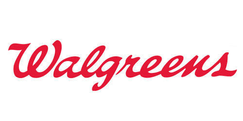

Home
Projects
Experience
Contact
Experience
Places I have been working at.
NYC Department of Education
CUNY DOE IT Intern
Designed and implemented a switch-mode power supply for an augmented reality device.
Improved a PCB design resulting a 20% reduction in board size.
October 2017 - Present
Hostos Community College
Tutor at CSTEP program
Developed multiple databases using MS Access to facilitate operational improvements and increase efficiency in asset tracking by 40%.
Prepared daily, weekly, and monthly progress reports and performance analysis.
January 2015 - April 2015
Walgreens
Photo Technician
Assisted in the maintenance of the air shuttling system required for an NMR machine.
Recorded and inputted research data into laboratory database.
June 2014 - January 2015
Volunteer Experience
